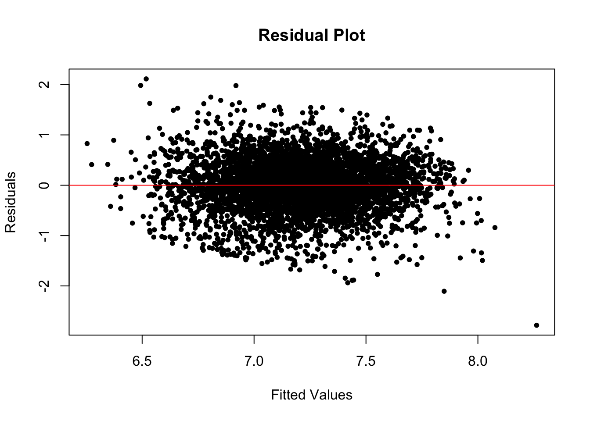
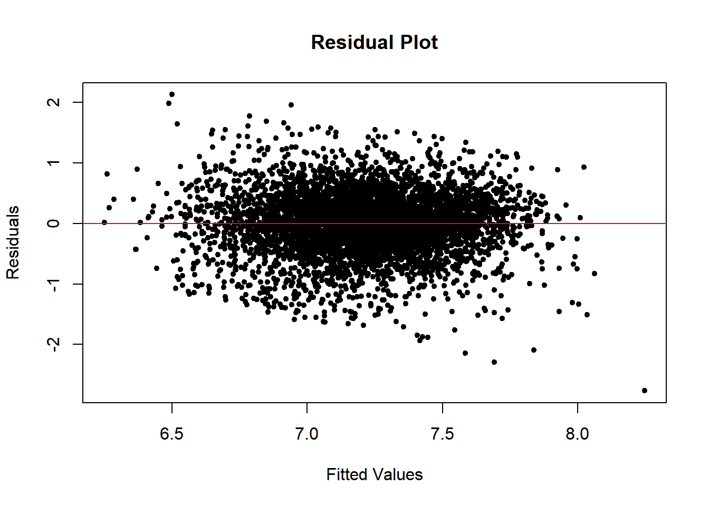

| r.squared | adj.r.squared | sigma | statistic | p.value | df | logLik | AIC | BIC | deviance | df.residual | nobs |
|---|---|---|---|---|---|---|---|---|---|---|---|
| 0.1108854 | 0.1107132 | 884.7833 | 644.1498 | 0 | 1 | -42390.52 | 84787.04 | 84806.69 | 4043376235 | 5165 | 5167 |
Analysis
Here we provide a detailed analysis using more sophisticated statistics techniques.
The question we want to address
- The primary focus of this research is to explore the relationship between an individual’s total income and their rental expenditures.
- The analysis aims to determine how rental spending adjusts in response to changes in income levels.
- Both linear and nonlinear models are employed to elucidate the connection between these variables.
- Additionally, the study considers racial differences, examining how the coefficients vary among different racial groups.
- A time series regression model is utilized to account for temporal variations in this relationship.
Models and Inferences (First dataset)
Initial imple Linear Regression Model (Based on 2022 Data) aimed to determine the potential worth of exploring the relationship between the predictor and response
– Detail analysis and plots refer to class blog 4 - The findings indicate that for every $1,000 increase in income, there is an associated increase of approximately 5.3213 units in the response variable on average.
- The coefficient of this primary predictor, along with the intercept, has shown statistical significance.
- Nonetheless, this initial model provides only a preliminary look at the relationship. A more comprehensive analysis will involve incorporating additional control variables.
Including additional confounding variables, improving upon the simple linear regression framework.
- Multiple Linear Regression Model (Using the 2022 Dataset) – For details, see class blog 4.
- This expanded model
- The correlation matrix was utilized to select potential control variables as well as revealing variables that may potenitally pose a multi-collinearity issue.
| INCTOT | ROOMS | NFAMS | AGE | FTOTINC | RENTGRS | |
|---|---|---|---|---|---|---|
| INCTOT | 1.0000000 | -0.0149409 | -0.0313099 | -0.0077964 | 0.7282638 | 0.3329946 |
| ROOMS | -0.0149409 | 1.0000000 | 0.1631221 | -0.0439707 | 0.1083906 | 0.1406264 |
| NFAMS | -0.0313099 | 0.1631221 | 1.0000000 | -0.1405046 | -0.0924716 | 0.0881204 |
| AGE | -0.0077964 | -0.0439707 | -0.1405046 | 1.0000000 | -0.0768613 | -0.0870537 |
| FTOTINC | 0.7282638 | 0.1083906 | -0.0924716 | -0.0768613 | 1.0000000 | 0.4448424 |
| RENTGRS | 0.3329946 | 0.1406264 | 0.0881204 | -0.0870537 | 0.4448424 | 1.0000000 |
- Upon fitting the multiple linear regression (MLR) model, ‘Kitchen’ was excluded due to its statistical insignificance, as evidenced by a notably high p-value. While ‘Employment Status’ also showed a non-significant p-value, it was not as pronounced as with ‘Kitchen’. It is speculated that there might be an interaction effect between ‘Employment Status’ and variables such as ‘Income’ or ‘FTOTINC’, which will be further explored.
- A multicollinearity review was conducted, leading to the exclusion of ‘FTOTINC’ to mitigate overfitting.
| GVIF | Df | GVIF^(1/(2*Df)) | |
|---|---|---|---|
| INCTOT | 2.317240 | 1 | 1.522248 |
| KITCHEN | 1.023481 | 1 | 1.011673 |
| ROOMS | 1.108739 | 1 | 1.052967 |
| NFAMS | 1.111046 | 1 | 1.054062 |
| AGE | 2.074406 | 1 | 1.440280 |
| MARST | 1.856902 | 5 | 1.063846 |
| RACE | 1.198063 | 8 | 1.011358 |
| EMPSTAT | 1.576945 | 2 | 1.120609 |
| FTOTINC | 2.385884 | 1 | 1.544631 |
| REGION_CLASSIFIED | 1.130442 | 3 | 1.020645 |
- Control variables were selected and confirmed.
| r.squared | adj.r.squared | sigma | statistic | p.value | df | logLik | AIC | BIC | deviance | df.residual | nobs |
|---|---|---|---|---|---|---|---|---|---|---|---|
| 0.2317473 | 0.2284616 | 824.1282 | 70.53243 | 0 | 22 | -42013.05 | 84074.11 | 84231.31 | 3493739342 | 5144 | 5167 |
- The model concludes that for every $1,000 increase in total income (INCTOT), there is an expected increase of 5.1111 units in the response variable, holding all other variables unchanged.
- The residual plot showed signs of heteroscedasticity, suggesting the need for further model adjustments, such as adding interaction terms or applying logarithmic transformations to key regressor and response variables.

Log-Log Regression Model (Utilizing the 2022 Dataset)
– Detail in class blog 4 - Both the predictor and response variables underwent log transformation as their distributions are extremely right skewed (talked in data page) - Outliers were identified and removed from the analysis (also talked in data page, showed the density plot) - Fit the cleaned variables and do the model again. - All variables demonstrated statistical significance except one subgroup of marital status and one subgroup of employment status.
| r.squared | adj.r.squared | sigma | statistic | p.value | df | logLik | AIC | BIC | deviance | df.residual | nobs |
|---|---|---|---|---|---|---|---|---|---|---|---|
| 0.2267776 | 0.2234707 | 0.5072099 | 68.5763 | 0 | 22 | -3812.614 | 7673.227 | 7830.428 | 1323.355 | 5144 | 5167 |
- The residual plot suggested an acceptable fit.

- The residual histogram.
- Four assumptions of linear regression.
- We accept this conclusion main conclusion we got from the model is The coefficient (elasticity) of 0.1334 means that a 10% increase in total income (INCTOT) is associated with an average 13.34% increase in rent gross (RENTGRS), given that other variables in the model are held constant.
Adding interaction terms
- Log-Log Regression Model with interaction terms (Utilizing the 2022 Dataset) – Detail in class blog 4
- Add interaction term EMPSTAT*FTOTINC; as indicated the potential interaction between them, confirm to add the interaction term, After incorporating the interaction terms, the p-value for “EMPSTATUnemployed:FTOTINC” is slightly above the conventional alpha threshold of 0.05, suggesting marginal statistical significance.
| term | estimate | std.error | statistic | p.value |
|---|---|---|---|---|
| (Intercept) | 5.1113135 | 0.1036114 | 49.3315824 | 0.0000000 |
| log_INCTOT | 0.1331529 | 0.0073835 | 18.0338588 | 0.0000000 |
| ROOMS | 0.0299321 | 0.0035566 | 8.4158816 | 0.0000000 |
| NFAMS | 0.0555431 | 0.0098767 | 5.6236800 | 0.0000000 |
| AGE | -0.0027305 | 0.0005401 | -5.0552371 | 0.0000004 |
| MARSTMarried, spouse absent | 0.0941770 | 0.0450879 | 2.0887414 | 0.0367801 |
| MARSTMarried, spouse present | 0.1370358 | 0.0230398 | 5.9477787 | 0.0000000 |
| MARSTNever married/single | 0.0896923 | 0.0234201 | 3.8297086 | 0.0001298 |
| MARSTSeparated | 0.0307051 | 0.0434374 | 0.7068820 | 0.4796719 |
| MARSTWidowed | 0.1049586 | 0.0350501 | 2.9945293 | 0.0027618 |
| RACEBlack/African American | 0.2465346 | 0.0660208 | 3.7341954 | 0.0001904 |
| RACEChinese | 0.2966334 | 0.0865709 | 3.4264776 | 0.0006163 |
| RACEJapanese | 0.3086582 | 0.1385602 | 2.2276104 | 0.0259496 |
| RACEOther Asian or Pacific Islander | 0.3309648 | 0.0695640 | 4.7577031 | 0.0000020 |
| RACEOther race, nec | 0.2729952 | 0.0669648 | 4.0766956 | 0.0000464 |
| RACEThree or more major races | 0.3456014 | 0.0936388 | 3.6907926 | 0.0002259 |
| RACETwo major races | 0.2766317 | 0.0663374 | 4.1700733 | 0.0000310 |
| RACEWhite | 0.2627766 | 0.0639610 | 4.1083889 | 0.0000405 |
| EMPSTATNot in labour force | -0.0908464 | 0.0233084 | -3.8975885 | 0.0000984 |
| EMPSTATUnemployed | 0.0561573 | 0.0526989 | 1.0656248 | 0.2866433 |
| FTOTINC | 0.0000019 | 0.0000001 | 13.5815058 | 0.0000000 |
| REGION_CLASSIFIEDNORTHEAST | 0.2611149 | 0.0237360 | 11.0007889 | 0.0000000 |
| REGION_CLASSIFIEDSOUTH | 0.1904665 | 0.0206891 | 9.2061053 | 0.0000000 |
| REGION_CLASSIFIEDWEST | 0.4456625 | 0.0220563 | 20.2057095 | 0.0000000 |
| EMPSTATNot in labour force:FTOTINC | 0.0000017 | 0.0000003 | 5.3486949 | 0.0000001 |
| EMPSTATUnemployed:FTOTINC | 0.0000006 | 0.0000010 | 0.6301514 | 0.5286235 |
- The addition of this interaction term does not adversely affect the performance of the other variables, as assessed by their respective p-values.
- All variables demonstrated statistical significance except one subgroup of marital status and one subgroup of employment status. -The residual plot suggested an acceptable fit.
# Calculate residuals and fitted values
residuals_2022 <- resid(log_model_2022)
fitted_values_2022 <- fitted(log_model_2022)
# Create a residual plot
plot(fitted_values_2022, residuals_2022,
xlab = "Fitted Values", ylab = "Residuals",
main = "Residual Plot", pch = 20)
abline(h = 0, col = "red") 
-The conclusion is the coefficient change from shifting from 0.1334 to 0.1715199, indicating a potential moderating effect of employment status on the relationship between total family income and gross rent.It means that given a 10% increase in total income (INCTOT) is associated with an average 17.15% increase in rent gross (RENTGRS), given that other variables in the model are held constant.
- Log-Log Regression Model (Utilizing the 2000-2022 Dataset) – Detail in class blog 5
- Using the accepted model above to fit the dataset of each year
- All coefficients show to be statistically significant
- Plot the residual plot & comfirmed it is falling within an acceptable range.
- Compare the coefficients change for each year, plot diagram see the trend
- Log-Log Regression Model by Race (2022 Dataset) — Detail in class blog 6
- The analysis stratified the data by race, applying the aforementioned Log-Log regression approach.
- It provided detailed coefficients for each racial category, examining the influence on the rent-income relationship.
- The statistical significance of all coefficients was verified, with residual plots falling within an acceptable range.
- Longitudinal Log-Log Regression Model by Race (2000-2022 Dataset) — Detail in class blog 6
- This model extended the 2022 dataset analysis to explore how the rent-income relationship for each racial group has evolved from 2000 to 2022.
- Trends over time for each race were charted to illustrate these dynamics.
- Similar to the 2022 model, the coefficients were found to be statistically significant and the residual plots falling within an acceptable range.
- Time series model (using 2000-2022 dataset) – Detail in class blog 7
Rubric: On this page
You will
- Introduce what motivates your Data Analysis (DA)
- Which variables and relationships are you most interested in?
- What questions are you interested in answering?
- Provide context for the rest of the page. This will include figures/tables that illustrate aspects of the data of your question.
- Modeling and Inference
- The page will include some kind of formal statistical model. This could be a linear regression, logistic regression, or another modeling framework.
- Explain the ideas and techniques you used to choose the predictors for your model. (Think about including interaction terms and other transformations of your variables.)
- Describe the results of your modelling and make sure to give a sense of the uncertainty in your estimates and conclusions.
- Explain the flaws and limitations of your analysis
- Are there some assumptions that you needed to make that might not hold? Is there other data that would help to answer your questions?
- Clarity Figures
- Are your figures/tables/results easy to read, informative, without problems like overplotting, hard-to-read labels, etc?
- Each figure should provide a key insight. Too many figures or other data summaries can detract from this. (While not a hard limit, around 5 total figures is probably a good target.)
- Default
lmoutput and plots are typically not acceptable.
- Clarity of Explanations
- How well do you explain each figure/result?
- Do you provide interpretations that suggest further analysis or explanations for observed phenomenon?
- Organization and cleanliness.
- Make sure to remove excessive warnings, hide most or all code, organize with sections or multiple pages, use bullets, etc.
- This page should be self-contained, i.e. provide a description of the relevant data.